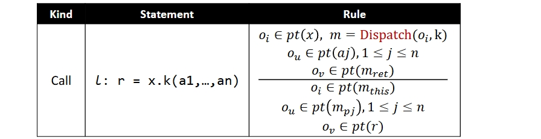
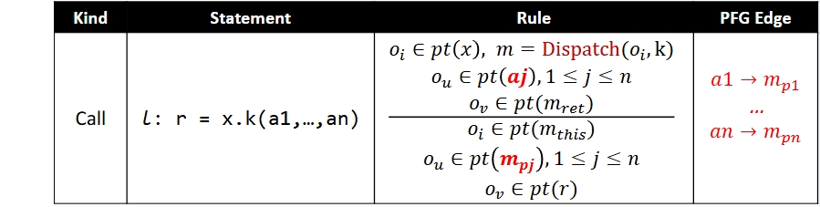
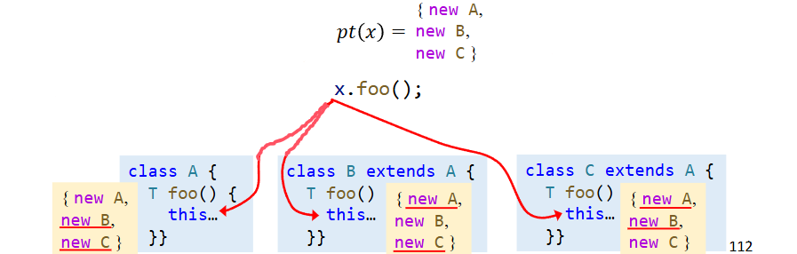
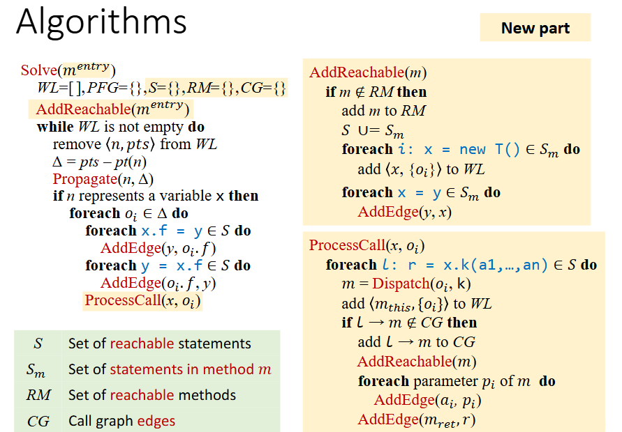
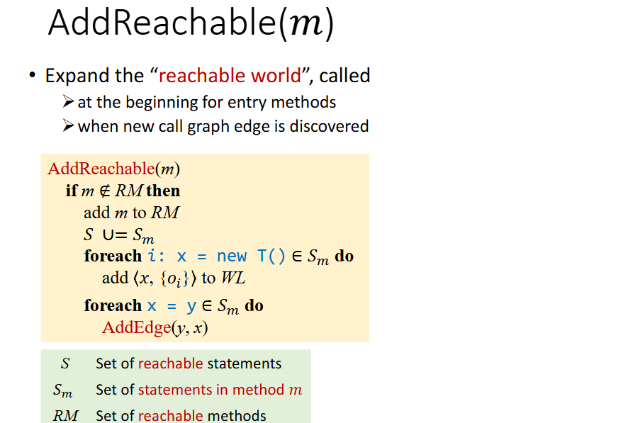
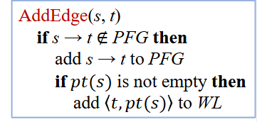
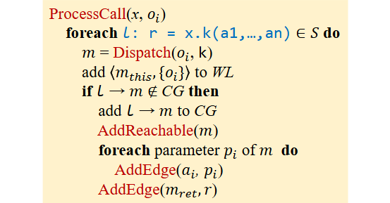

Pointer Analysis with Method Calls
过程间指针分析需要调用图，在 07 过程间分析中，我们采用了 CHA 方法来构造调用图。但是它本身是不精确的，因为它在一些情况下引入虚假的调用边和指向关系。
而利用指针分析的方法，会比CHA更加精确。并且这种好处对调用图和指向关系的构建都会带来更精确的好处。规则如下：
我们来一点一点解析这里面的符号所代表的含义。这里的 Dispatch(oi,k) 和前面 CHA 中的本质上是一样的，它利用 receive object oi 的类型和调用点方法的签名 k 来找到实际的调用方法 m 。mthis 代表当前找到的目标方法的 this 变量。aj 表示调用的第 j 个参数。mpj 表示 m 的第 j 个参数。所以为了将调用的参数对应传递给 m 的参数，会在他们之间加上 PFG 边进行指向信息的传递。
mret 代表 m 的返回值，将返回值赋给调用点的左值。
这里可以思考一个问题也就是为什么我们在处理 mthis 的时候，不和参数一样直接添加 PFG Edge ？
首先我们知道在 Java 中，this 是一个很重要的变量，方法中可能会频繁地使用 this 变量，所以 this 变量的指向信息的正确性十分重要。我们再来看上图的例子，如果我们直接引入新 PFG Edge ，会导致给方法的 this 引入虚假的指向关系。具体来说在下面的三个方法中，其实每个方法的 this 的指向的类都是声明方法的类本身。而在 x 调用foo方法的时候，如果直接引入 PFG Edge，会将 x 原来所有的指向信息都流入找到的方法的 this ，但其实最终 this 只会是其中一个，而这由具体调用到哪个方法所决定。所以为了避免给 this 引入虚假的指向信息，我们不能和参数一样直接添加 PFG Edge。
过程间指针分析中指针分析和调用图构造依然是一个相互依赖的过程。从 Entry 方法开始，所以 Entry 方法一开始就可以被访问，然后其他可访问的方法在分析过程中逐渐被发现，所以实际上我们仅仅分析可访问的方法和语句。这一方面简化了分析的流程，另一方面让分析变的更加精确，因为这样避免了不会被访问的方法中的指向信息流入，从而避免不精确的指针分析。
算法如图所示，其中黄色背景的部分表示和 CHA 中不同的地方，接下来我们一一分析算法的内容。由于是从程序的 Entry 通常也就是 main 方法开始，所以传入的参数就是 main 方法。首先会初始化五个数据结构，分别是 WorkList，依旧是一个指针和一个指针集形成的 pair 、PFG，一个针对指针分析的 CFG 、S，所有的可达语句，之前是所有语句、RM，可达的方法、CF，Call Graph 的边。然后对 main 方法执行Add reachable方法。
这个方法主要做了什么呢？每当发现新方法，就会调用这个函数，所以我们会在有新的 call edge 和算法一开始执行这个方法。首先判断当前方法有没有在 RM 里面了，如果不在，我们要把他加进去，然后将该方法内的语句加入 S 中，再根据新发现的语句中的 new 语句和 assign 语句做有关 WL 和 PFG 的更新处理，更新新发现的语句的 WL 和 PFG。
加边的方法和之前一样，如果 s → t 已经在 PFG 里面了，就什么都不做；但如果不在，就将 s → t 加入到PFG里。并且如果 pt(s) 不为空，还将 <t,pt(s)> 加入到WL，这也就是将 s 的指向传递给 t ，确保 s 指向的每一个对象也被 t 所指向。
ProcessCall 函数的处理则是针对 n 表示一个变量的情况下，会涉及到函数调用的情况。根据我们之前的分析，我们在这里面主要做的事情就是首先找到调用的具体方法是什么，这里和 CHA 不同的地方在于它是根据此处 x 的类名去对应的，因此不会产生冗余的方法。将该方法和此处的 oi 加入 WL 。并且如果该调用语句已经被处理过（因为是非上下文敏感，每当分析到该 x 变量，都会执行 ProcessCall ，所以有可能不是第一次遇到），即 l → m 已经被加入CG 了，就不做任何处理，否则加入其中，并将 m 加入可达方法集合中。同时，对于 m 中的每一个参数，将调用语句中提供的参数一一对应传入，也就是执行 AddEdge 以达到指针传递的效果。最后对返回值做相似的处理。